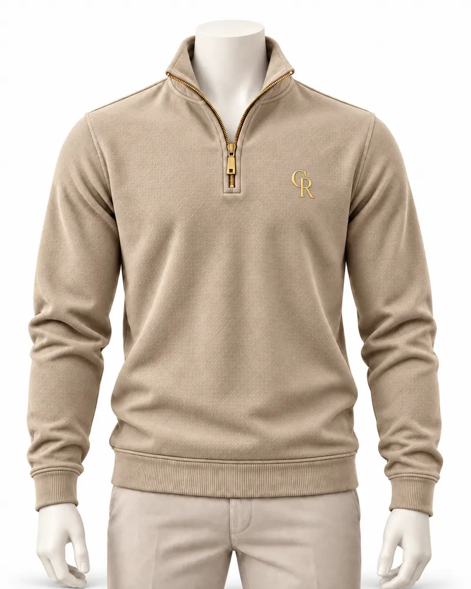

THE FIRST EDITION
Die Kollektion entdeckenUNSER ERSTES KAPITEL
The First Edition.
Klare Linien. Bewusste Details.
Ein erster Blick auf die entstehende Kollektion.
Die gezeigten Entwürfe geben einen Einblick in unsere Designrichtung. Materialien, Passformen, Preise und Liefertermine werden zur finalen Kollektion bestätigt.
LUXEMBOURG · EUROPEAN SPIRIT
LA MAISON CHEVALIER & ROTH
Eine Haltung.
Ein gutes Gefühl.
Chevalier & Roth entsteht in Luxemburg aus einer einfachen Idee: Eleganz und ein angenehmes Tragegefühl gehören zusammen.
Wir entwickeln eine neue Perspektive auf europäische Alltagsmode für Frauen und Männer. Klassische Gestaltung trifft auf moderne Silhouetten. Mit dem Anspruch, Selbstbewusstsein zu begleiten und Persönlichkeit Raum zu geben.
Unseren Ansatz entdecken
DIE IDEE HINTER JEDEM STÜCK
Eleganz beginnt
im Detail.
Ein Kleidungsstück soll mehr können, als gut auszusehen. Deshalb denken wir Form, Materialgefühl und Bewegung von Anfang an zusammen.
01 Form & Bewegung +
Klare Proportionen und Bewegungsfreiheit sind gemeinsame Entwicklungsziele. Die endgültigen Schnitte und Größen entstehen durch Fittings und Tragetests.
02 Material & Gefühl +
Haptik, Formstabilität und Pflege fließen in unsere Materialauswahl ein. Verbindliche Zusammensetzungen veröffentlichen wir mit den finalen Produkten.
03 Eine eigene Signatur +
Ein dezentes CR-Monogramm, ruhige Farbwelten und bewusst gesetzte Akzente prägen unsere gestalterische Richtung.
BE PART OF THE BEGINNING
Das erste Kapitel.
Mit Ihnen.
Begleiten Sie die Entstehung von The First Edition. Merken Sie Ihre bevorzugte Auswahl vor und erfahren Sie, sobald es Neuigkeiten zum Start gibt.
Vorbestellungsstart geplant: Winter 2027/28.
Der genaue Termin steht noch nicht fest.
Wann startet The First Edition?
Der Vorbestellungsstart ist für Winter 2027/28 geplant. Der genaue Termin hängt von Mustern, Produkttests und bestätigter Lieferfähigkeit ab. Über die Warteliste informieren wir Sie zum Start Ihrer Auswahl.
Kann ich bereits bestellen?
Die Website zeigt die Kollektion in Entwicklung. Sie können Stücke entdecken, eine persönliche Auswahl zusammenstellen und sich unverbindlich vormerken. Eine Vormerkung ist keine Bestellung.
Wie finde ich meine Größe?
Die derzeit auswählbaren Größen sind vorläufig. Verbindliche Produktmaße und Hinweise zur Passform folgen nach den Fittings mit der finalen Kollektion.
Was ist über Material und Herstellung bekannt?
Materialien und Produktionspartner werden noch ausgewählt. Europäische Produktion ist unsere bevorzugte Richtung. Konkrete Herkunfts- und Materialangaben veröffentlichen wir, sobald sie bestätigt sind.